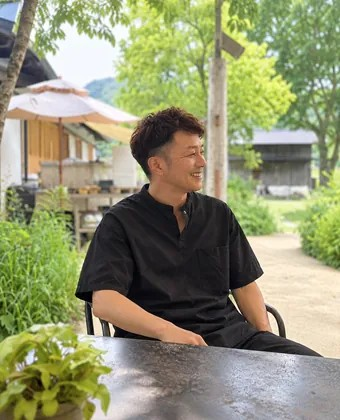

3つの売り場から選べます。料金は税込、2027年2月までのキャンペーン価格です。
表の時間は、売る時間です。設営は60分前から、撤収は終わってから45分以内でかまいません（テントの場合）。
飲食・食品の販売が中心です（駅構内は包装済み食品・物販も可）。営業許可・食品衛生責任者・賠償責任保険が必要です。開催日は調整中です。
出たい日と売り場を選ぶだけです。仮予約は0円。開催日が確定したらご連絡し、お支払いで予約が確定します。日程が変わったときは、費用なしで取り消せます。
{{rvMsg}}
※開催日・時間はUDCみなくさとの調整中の案です。開催が確定した日だけ、仮予約の受付順にお支払いのご案内をお送りし、お支払いの完了で予約が確定します。日程が変わった場合は、変更後の日程でご案内するか、費用なしで取り消します。LINEで仮予約したい方は「LINEで登録」から希望日を送ってください。
ふだんは使えない駅前・改札前を、2027年2月まで出店に使えるよう、関係機関と調整しています。売上報告は、店名が分からない統計の形で実験の結果として集計します。
※出店料はキャンペーン価格で計算しています。計算例で、売上を保証するものではありません。最初の表示は、人件費（ご自身の分も）・包装資材・決済手数料・交通費まで引いた額です。「簡単な計算に戻す」を押すと、売上−原価−出店料だけで計算します。売れ残りや設備の償却費は含みません。参考：南草津駅の1日平均乗車人員26,860人の0.1%で約27人。
南草津駅は1日平均26,860人が乗車する駅です（2023年度）。同じ駅でも、出口ごとに通る人と時間帯が違います。あなたの商品に合う場所を選んでください。3か所とも、最初の開催から出店できる予定です（開催日・区画は関係機関の承認後に確定）。1日あたり最大21店舗が並ぶ規模です。
数字は公表データで、年度を併記しています。時間帯ごとの人の流れと客層は、それらをもとにした運営者の推定です。
※客層・時間は、公表データと駅周辺の構成から見た想定です。出口別の通行量は公表されていません。出典：JR西日本の公表値（2023年度の乗車人員、2015年度の定期・定期外の内訳＝草津市統計書）、国土交通省「草津駅、南草津駅周辺における公共交通改善のための基盤整備検討調査」（2016年の調査）、草津市草津未来研究所「南草津のまちづくりに関する調査研究報告書」（2013年）、立命館大学「2025年度からの授業時間」、都市空間部会WS③資料（2026年10月2日）。
テントは1店舗あたり2.5m×2.5m〜3m×3mが基準です（駅構内のブースは約2.1m×2.1m）。店舗数はテント出店の場合の目安で、キッチンカーは1台でテント数店舗分の場所を使います。
通りがかりを待つだけにはしません。出店日の前に、運営が近隣の利用者へ出店者とメニューを届けます。
開催案内に登録した近隣の利用者へ、出店日の前にお店とメニューをお知らせします。「帰り道に何が買えたらうれしいか」の投票結果も、出店前にお見せします。
希望する出店者は、事前注文の受付先を載せられます。当日を迎える前に、売れる数がある程度見えます。
赤字を補てんする保証ではなく、もう一度挑戦できるようにする仕組みです。売上1万円以上でも、人件費などを含めると赤字になることがあります（目安は「利益の計算」で確認できます）。最初の開催日から2か月以内（2027年2月末まで）に、南草津で初めて出店する方が対象です。判定は売上の数字だけで行います。無料で出られる日時と受け入れ数は、開催条件が決まった時点でこのページに載せます。
大津市で出店している方へ：草津市は滋賀県（草津保健所）の管轄です。大津市の許可だけでは営業できない場合があるので、お申し込み前に一緒に確認します（無料）。
営業許可がまだの方へ：このチャレンジは、許可をお持ちの方が対象です。これから開業する方には、シェアキッチンを使って許可を取り、販売を始める道を個別にご案内します。LINEで「許可なし」と送ってください。
決済のご案内と一緒に、同じ内容をお送りします。いま全部を読まなくても大丈夫です。運営への連絡は、すべてLINEで行います。
規約の全文は、決済のご案内の際にお送りします。決済の前にご確認ください。
※公序良俗に反する出店、ルールを守っていただけない場合は、出店をお断りすることがあります。
会場に、お店や商品の看板を出せます。出店日の予告、近くのお店への道案内、開業のお知らせなどに使えます。出店しない事業者の方もお申し込みいただけます。

来店・面談は不要、24時間受け付けます。優先案内登録の時点では費用も書類もいりません。
{{afMsg}}
3,300円・5,500円は社会実験期間中（2027年2月まで）の価格です。3月以降は、出店者の売上実績をふまえて見直し、事前にお知らせします。
屋外の西口・東口は、草津市に気象警報が出ている場合などに中止し、全額返金または振替（2か月有効）。判断は昼の枠が前日18時（一次）・当日7時（最終）、夕方の枠が当日12時。駅構内は屋内のため、雨天でも開催します。
7日前まで全額返金／6日前〜2日前は50%／前日・当日は返金なし（旧大津公会堂と同じ規定）。
運営に払うのは出店料だけ。テント・什器・商品はご自身で。
出店後24時間以内に、売上報告フォームへ売上と集計画面の写真を送ってください。売上が1万円未満（5,500円の枠は1万8千円未満）なら、写真を確認したうえで2回目の無料クーポンをお送りします。
はい。2回以上出店した方に、同じ曜日・同じ場所に毎週出られる定期出店を、売上実績の順にご案内します。
出店料3,300円はキャンペーン期間（2027年2月まで）の価格です。LINEで「主力商品」と「お持ちの許可」を送ってください。開催が決まりしだい、ご案内します。